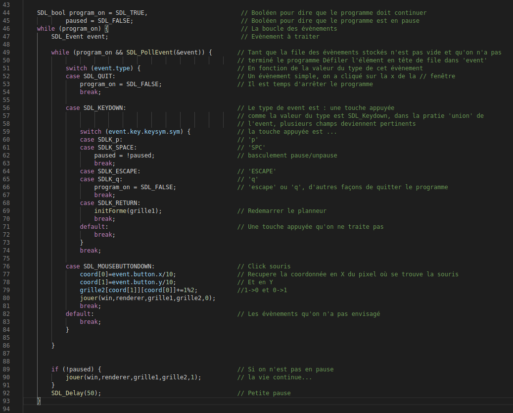
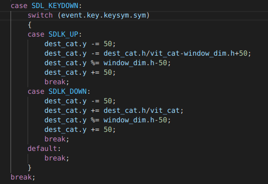

Chef d'oeuvre
Fonctionalités ajoutées :
Gestion de niveaux
Ajout de plusieurs planètes
Accélération des planètes
Liens vers le fichier du code C : Nyancat
Tas binaire
Partition

Une fois les règles crées, il faut que le jeu apparaisse à l'écran.

La deuxième partie est arrivée après quelques exercices.
On a la possibilité d'avoir une personne qui peut intéragir avec le jeu :

Possibilités :
- Fermer le jeu avec la X.
- Quitter le jeu avec 'echap' ou Q
- Mettre le jeu en pause avec 'espace' ou P
- Redémarer le jeu avec 'entrée'
- Cliquer pour mettre un pixel en plus (ou en moins)
On a fait plusieurs fichiers pour séparer les étapes, on a donc fait un makefile pour compiler :

Liens vers le fichier du code C : main.c / main.txt
Chef d'Oeuvre NyanCat
Le prochain exercice était la gestion de l'écriture sur la fenetre :
On va pour cela utiliser la librairie TTF puis on ouvre la font desiré

une fois la font initialiser on peut l'utiliser pour afficher un message

Suite aux quelques exercices qui ont été présentés par mes camadares on a commencé à realiser un premier chef d'oeuvre :
L'idée est partie d'une envie de refaire un meme de l'internet, le NYAN CAT :
Une fois l'animation créée lors de l'exrcice sur les animations, on s'est dit que l'on aller se reservir de cette animation pour créer notre chef d'oeuvre.Le but est d'aider le petit chat à éviter les planètes lors de son exploration de l'espace
En plus de différentes boucles ou fonctions déjà vu je voulais présenter deux partie du code :

